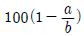
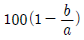
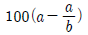
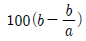
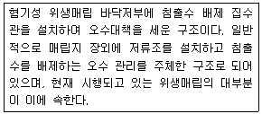
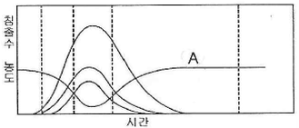
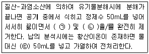
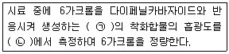
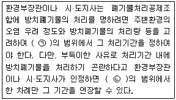

폐기물처리기사 (2016-03-06 기출문제)
1과목: 폐기물 개론
1. 쓰레기발생량 예측방법이 아닌 것은?
- 물질수지법
- 경향법
- 다중회귀모델
- 동적모사모델
(정답률: 88%)

2. 쓰레기 발생량에 영향을 미치는 요인에 관한 설명으로 틀린 것은?
- 수거빈도가 잦거나 쓰레기통의 크기가 크면 쓰레기 발생량이 증가한다.
- 재활용품의 회수 및 재이용률이 높을수록 쓰레기 발생량이 감소한다.
- 쓰레기 관련 법규는 쓰레기 발생량에 중요한 영향을 미친다.
- 생활수준이 높은 주민들의 쓰레기 발생량은 그렇지 않은 주민들보다 적고 종류 또한 단순하다.
(정답률: 85%)
3. 발열량의 관계식이 맞는 것은?
- 고위발열량 = 저위발열량 + 수분의 응축열
- 고위발열량 = 저위발열량 - 수분의 응축열
- 고위발열량 = 저위발열량 + 회분(재)의 잠열
- 고위발열량 = 저위발열량 - 회분(재)의 잠열
(정답률: 84%)
4. 폐기물 압축기에 관한 설명으로 틀린 것은?
- 고정압축기는 주로 수압으로 압축시킨다.
- 고정압축기는 압축방법에 따라 수평식과 수직식 압축기로 나눌 수 있다.
- 백(bag) 압축기는 회전판 위에 열려진 상태로 놓여 있는 백과 압축피스톤의 조합으로 구성된다.
- 백(bag) 압축기 중 회분식이란 투입량을 일정량씩 수회 분리하여 간헐적인 조작을 행하는 것을 말한다.
(정답률: 63%)
5. 오니의 혐기성 소화 과정에서 메탄발효단계에서의 반응속도가 2차 반응일 경우, 반응속도상수의 단위는?
- 시간 / 농도
- 농도 × 시간
- 1 / 시간
- 1 / (농도 × 시간)
(정답률: 79%)
6. 폐기물로부터 불연성 폐기물을 제거한 후 연료로 이용한 방법으로 열용량이 가장 낮고 회분이 많으며 수분함량이 15~20 % 인 RDF의 종류는?
- Power RDF
- Pellet RDF
- Powder RDF
- Fluff RDF
(정답률: 68%)
7. 한 해 동안 A시에서 발생한 폐기물의 성분 중 비가연성이 중량비로서 67.5 % 였다. 지금 밀도가 650kg/m3 인 폐기물 2 m3 있을 때 가연성 물질의 양(kg)은? (단, 폐기물은 비연성과 가연성으로 나눈다.)
- 423
- 578
- 635
- 782
(정답률: 78%)
8. 건식 전단파쇄기에 관한 설명으로 가장 거리가 먼 것은?
- 고정칼, 왕복 또는 회전칼의 교합에 의하여 폐기물을 전단한다.
- 충격파쇄기에 비하여 파쇄속도가 느리다.
- 충격파쇄기에 비하여 이물질의 혼입에 강하다.
- 충격파쇄기에 비하여 파쇄물의 크기를 고르게 할수 있다.
(정답률: 80%)
9. 국내에서 발생되는 사업장폐기물의 특성에 대한 설명으로 가장 거리가 먼 것은?
- 사업장폐기물 중 가장 높은 증가율을 보이는 것은 폐유이다.
- 사업장폐기물의 대부분은 일반사업장폐기물이다.
- 일반사업장폐기물 중 무기물류가 가장 많은 비중을 차지하고 있다.
- 지정폐기물 중 배출량이 가장 많은 것은 폐산·폐알칼리이다.
(정답률: 67%)
10. 폐기물의 관거(pipeline)를 이용한 수거 방식에 관한 설명으로 가장 거리가 먼 것은?
- 자동화, 무공해화가 가능하다.
- 잘못 투입된 폐기물의 즉시 회수가 용이하다.
- 가설후에 경로변경이 곤란하고 설치비가 높다.
- 장거리 수송이 곤란하다.
(정답률: 89%)
11. 도시 쓰레기 수거계획 수립 시 가장 중요하게 고려하여야 할 사항은?
- 수거 인부
- 수거 빈도
- 수거 노선
- 수거 장비
(정답률: 91%)
12. 다음의 지정폐기물 중 연중 발생량이 가장 많은 것은?
- 분진
- 슬러지
- 폐유기용제
- 폐합성고분자화합물
(정답률: 75%)
13. 고정압축기의 작동에 대한 용어로 가장 거리가 먼 것은?
- 적하(Loading)
- 카셋용기(Cassettes Containing bag)
- 충전(Fill Charging)
- 램압축(Ram Compacts)
(정답률: 75%)
14. 폐기물의 관리 계획 시 조사 및 예측하여야 할 항목으로 가장 거리가 먼 것은?
- 배출원에 따른 폐기물의 배출량과 시간적 변동량을 파악한다.
- 수집 및 운반, 처리방법과 처분방법 등에 따른 소요비용을 검토한다.
- 폐기물의 재활용 또는 자원화 여부를 검토한다.
- 중간처리 과정에서 배출되는 폐기물의 질과 양을 예측한다.
(정답률: 66%)
15. 전과과정평가(LCA)의 구성요소로 가장 거리가 먼 내용은?
- 개선평가
- 영향평가
- 과정분석
- 목록분석
(정답률: 83%)
16. 폐기물을 Proximate Analysis 분석 대상성분으로만 짝지어진 것은?
- 수분함량, 가연성물질, 고정산소, 회분
- 고정산소, 고정질소, 고정황, 고정탄소
- 고정탄소, 회분, 휘발성고형물, 수분함량
- 수분함량, 회분, 가연분, 고정원소분
(정답률: 79%)
17. 쓰레기 수송방법 중 가장 위생적인 수송방법은?
- mono-rail
- conveyer
- container
- pipeline
(정답률: 75%)
18. 파쇄기로 20 cm의 폐기물을 5 cm로 파쇄하는데 에너지가 40 kWh/ton이 소요되었다. 15 cm의 폐기물을 5 cm로 파쇄시 톤당 소요되는 에너지량(kWh/ton)은? (단, Kick의 법칙을 이용할 것)
- 30.4
- 31.7
- 34.6
- 36.8
(정답률: 72%)
19. 함수율 70 %인 하수슬러지 50 m3과 함수율 36%인 1200 m3의 쓰레기를 혼합했을 때 함수율은?
- 35 %
- 37 %
- 39 %
- 41 %
(정답률: 70%)
20. 밀도가 a 인 도시쓰레기를 밀도가 b(a ＜ b)인 상태로 압축시킬 경우 부피( % )는?




(정답률: 87%)
2과목: 폐기물 처리 기술
21. 시멘트 고형화 방법 중 연소가스 탈황 시 발생된 슬러지처리에 주로 적용되는 것은?
- 시멘트기초법
- 석회기초법
- 포졸란첨가법
- 자가시멘트법
(정답률: 74%)
22. 소각로에서 열효율 향상의 대책으로 가장 거리가 먼 것은?
- 열분해 생성물의 완전 연소화
- 배기가스의 현열배출 손실의 저감
- 연소잔사의 현열손실 감소
- 전열 효율의 감소
(정답률: 68%)
23. 최종처분장의 지하수 오염방지를 위한 지중배수시설(Subsurface Drainage System)에 관한 설명으로 거리가 가장 먼 것은?
- 유해폐기물 매집장에 널리 이용된다.
- 반응성 화학물질(철, 망간, 칼슘)의 침적으로 막힘이 발생하기 쉽다.
- 연직차수시설과 함께 사용되어야 한다.
- 주로 12 m 이하의 얕은 깊이에 설치된다.
(정답률: 58%)
24. 관리형 폐기물매립지에서 발생하는 침출수의 주된 발생원은?
- 주위의 지하수로부터 유입되는 물
- 주변으로부터의 유입지표수(Run-on)
- 강우에 의하여 상부로부터 유입되는 물
- 폐기물 자체의 수분 및 분해에 의하여 생성되는 물
(정답률: 76%)
25. 분뇨 투입량이 50 kL/일 인 소화조가 있다. 온도 20℃에서 온도를 중온(35℃) 소화의 적정한계에 맞추려고 한다. 소화조의 열손실이 30 % 라면 소요열량(kcal)은? (단, 소화조의 분뇨 비열 1.2, 분뇨 비중 1)
- 1.3 × 106
- 3.3 × 106
- 4.3 × 106
- 7.3 × 106
(정답률: 38%)
26. 평균입경이 10 cm인 플라스틱을 재활용하기 위하여 2 cm로 파쇄하는데 20 kWh/ton이 소요된다면, 입경이 20 cm인 플라스틱을 2 cm로 파쇄하는데 소요되는 에너지( kWh/ton)는? (단, Kick의 법칙에 의하여 에너지량 W = C log(Xi/Xf)이다.)
- 약 28
- 약 32
- 약 36
- 약 40
(정답률: 63%)
27. 유기성폐기물 처리방법 중 퇴비화의 장·단점으로 가장 거리가 먼 것은?
- 생산된 퇴비는 비료가치가 낮다.
- 퇴비제품의 품질 표준화가 어렵다.
- 생산품인 퇴비는 토양의 이화학성질을 개선시키는 토양개량제로 사용할 수 있다.
- 퇴비화 과정 중 80% 이상 부피가 크게 감소된다.
(정답률: 70%)
28. 퇴비생산 공정에 관한 설명으로 가장 거리가 먼것은?
- 퇴비생산에 수분함량, 온도, pH, 영양소함량, 산소농도 등이 영향을 준다.
- 슬러지 수분함량이 크면 bulking agent 를 섞는다.
- 최소의 수분함량은 12 ~ 15 % 이나 최적수분함량 70 % 가량이다.
- 온도 55 ~ 65 ℃로 유지시켜야 하며 80 ℃ 이상은 좋지 않다.
(정답률: 83%)
29. 매립지에서 발생하는 메탄가스를 메탄산화세균을 이용하여 처리하고자 한다. 메탄산화세균에 의한 메탄 처리에 관한 설명으로 가장 거리가 먼 것은?
- 메탄산화세균은 혐기성 미생물이다.
- 메탄산화세균은 자가영양미생물이다.
- 메탄산화세균은 주로 복토층 부근에서 많이 발견 된다.
- 메탄은 메탄산화세균에 의해 산화되며, 이산화탄소로 바뀐다.
(정답률: 60%)
30. 토양오염 물질 중 BTEX에 포함되지 않는 것은?
- 벤젠
- 톨루엔
- 에틸렌
- 자일렌
(정답률: 84%)
31. 분뇨의 슬러지 건량은 5 m3이며 함수율이 90 %이다. 함수율을 80 % 까지 농축하면 농축조에서의 분리액은? (단, 비중은 1.0 기준)
- 15m3
- 20m3
- 25m3
- 30m3
(정답률: 68%)
32. 매립공법 중 압축매립공법(Baling System)에 관한 설명으로 가장 거리가 먼 것은?
- 쓰레기를 매립 후 다짐기계를 이용하여 일정한 압축을 실시한다.
- 쓰레기의 운반이 쉽다.
- 지가(地價)가 비쌀 경우에 유효한 방법이다.
- 층별로 정렬하는 것이 보편적이며 매립 각층별로 일일복토를 실시하여야 한다.
(정답률: 47%)
33. 인구 600000명에 1인당 하루 1.3 kg의 쓰레기를 배출하는 지역에 면적이 500000 m2의 매립장을 건설하려고 한다. 강우량이 1350 mm/year인 경우 침출수 발생량은? (단, 강우량 중 60 %는 증발되고 40 %만 침출수로 발생된다고 가정하고, 침출수 비중은 1, 기타 조건은 고려하지 않음)
- 약 140000톤/년
- 약 180000톤/년
- 약 240000톤/년
- 약 270000톤/년
(정답률: 49%)
34. 폐기물 매립지의 매립구조를 분류하면 여러방법이 있다. 다음 설명에 해당하는 매립구조 방법은?

- 개량형 혐기성 위생매립
- 준통기성 위생매립
- 혐기성 관리 위생매립
- 준호기성 위생매립
(정답률: 75%)
35. 고화처리 방법인 석회기초법의 장· 단점으로 가장 거리가 먼 것은?
- pH가 낮을 때 폐기물성분의 용출가능성이 증가한다.
- 탈수가 필요하다.
- 석회가격이 싸고 널리 이용된다.
- 두 가지 폐기물을 동시에 처리할 수 있다.
(정답률: 60%)
36. 폐기물 고화처리에 주로 사용되는 보통 포틀랜드 시멘트의 주성분을 옳게 나열한 것은?
- Al2O3 65%, MgO 22%
- MgO 65%, Al2O3 22%
- SiO2 65%, CaO 22%
- CaO 65%, SiO2 22%
(정답률: 67%)
37. 매립기간에 따른 침출수의 성상변화를 나타낸 다음 그림에서 A에 해당하는 수질인자는?

- COD
- NH4+
- pH
- 휘발성 유기산
(정답률: 75%)
38. A 매립지의 경우 COD를 기준 이내로 처리하기 위해 기존공정에 펜톤처리 공정과 RBC 공정을 추가하여 운전하고 있다면 다음 중 공정 추가 원인으로 가장 적합한 것은?
- 난분해성 유기물질의 과다유입
- 휘발성 유기화합물의 과다유입
- 질소성분 과다유입
- 용존고형물 과다유입
(정답률: 72%)
39. 유기성폐기물의 퇴비화과정 (초기단계-고온단계-숙성단계)중 고온단계에서 주된 역할을 담당하는 미생물은?
- 전반기: Pseudomonas,
후반기: Bacillus - 전반기: Thermoactinomyces,
후반기: Enterbacter - 전반기: Enterbacter,
후반기: Pseudomonas - 전반기: Bacillus,
후반기: Thermoactinomyces
(정답률: 78%)
40. 토양세척법 처리에 가장 부적합한 토양입경의 정도는?
- 자갈
- 중간모래
- 점토
- 미사
(정답률: 75%)
3과목: 폐기물 소각 및 열회수
41. C3H8 1Sm3를 연소시킬 때 이론건조연소가스량은?
- 17.8 Sm3
- 19.8 Sm3
- 21.8 Sm3
- 23.8 Sm3
(정답률: 37%)
42. 다이옥신을 억제시키는 방법이 아닌 것은?
- 제1차적(사전방지) 방법
- 제2차적(로내) 방법
- 제3차적(후처리)방법
- 제4차적 전자선조사법
(정답률: 72%)
43. 가로 1.5m,세로 2.0m, 높이 15.0m의 연소실에서 저위발열량 10000 kcal/kg의 중유를 1시간에200kg씩 연소한다. 연소실 열발생률(Kcal/m3·hr)은?
- 약 2.2 × 104
- 약 4.4 × 104
- 약 6.6 × 104
- 약 8.8 × 104
(정답률: 69%)
44. 스토커식 소각로에 있어서 여러 개의 부채형 화격자를 로폭(爐幅) 방향으로 병렬로 조합하고, 한 조의 화격자를 형성하여 편심캠에 의한 역주행 Grate로 되어 있는 연소장치의 종류는?
- 반전식(Traveling back Stoker)
- 계단식(Multistepped pushing grate Stoker)
- 병열계단식(Rows forced feed grate Stoker)
- 역동식(Pushing back grate Stoker)
(정답률: 64%)
45. 연소기 중 다단로의 장 · 단점으로 틀린 것은?
- 열용량이 높아 분진 발생율이 낮다.
- 체류시간이 길어 휘발성이 적은 폐기물연소에 유리하다.
- 늦은 온도반응 때문에 보조연료사용을 조절하기가 어렵다.
- 많은 연소영역이 있어 연소효율을 높일 수 있다.
(정답률: 57%)
46. 밀도가 500 kg/m3인 도시형 쓰레기 50 ton을 소각한 결과 밀도가 1500 kg/m3인 소각재가 15ton 발생되었다면 소각 시 용량감소율(%)은?
- 80
- 85
- 90
- 95
(정답률: 71%)
47. 반응속도가 빨라 폐기물의 수분함량 변화에도 큰 문제없이 운전되지만 열손실이 크며 운전이 까다로운 단점을 가진 열분해 장치는?
- 유동상 열분해 장치
- 부유상태 열분해 장치
- 고정상 열분해 장치
- 회전상 열분해 장치
(정답률: 58%)
48. 황 성분이 2 %인 중유 300 ton/hr를 연소하는 열설비에서 배기가스 중 SO2를 CaCO3로 완전 탈황하는 경우 이론상 필요한 CaCO3의 양은? (단, Ca:40, 중유중 S는 모두 SO2로 산화)
- 약 13 ton/hr
- 약 19 ton/hr
- 약 24 ton/hr
- 약 27 ton/hr
(정답률: 59%)
49. 탄소 70%, 수소30%로 구성된 액상폐기물을 완전 연소할 때 (CO2)max은? (단, 표준상태, 이론 건조가스 기준)
- 약 9.1%
- 약 10.4%
- 약 13.1%
- 약 14.8%
(정답률: 45%)
50. 폐기물 열분해 연소공정에 대한 설명으로 틀린것은?
- 열분해공정 중 고온법이란 열분해온도가 1100 ~1500 ℃의 고온에서 행하는 방법이다.
- 열분해공정 중 저온법이란 고온법에 비해 타르(Tar), 유기산, 탄화물(Char) 및 액체상태의 연료가 적게 생성되는 방법이다.
- 폐기물내 수분함량이 많을수록 열분해에 소요되는 시간이 길어진다.
- 폐기물의 입경이 미세할수록 열분해가 쉽게 일어난다.
(정답률: 66%)
51. 폐기물 연소 후 배출되는 배기가스 중 염화수소 농도가 361 ppm이고, 배기가스 부피가 2900 Sm3/hr일 때, 배기가스 내 염화수소를 Ca(OH)2로 처리 시 필요한 Ca(OH)2량은? (단, 표준상태를 기준으로 하고, Ca 원자량 : 40, 처리반응율은 100%로 한다.)
- 1.73kg/hr
- 2.82kg/hr
- 3.64kg/hr
- 4.81kg/hr
(정답률: 40%)
52. 폐기물 소각능력이 600 kg/m2 · hr인 소각로를 1일 8시간동안 운전 시, 로스톨의 면적(m2)은? (단, 소각량은 1일 40톤이다.)
- 8.3
- 9.5
- 10.7
- 12.9
(정답률: 66%)
53. 고체연료의 연소 형태에 대한 설명 중 가장 거리가 먼 것은?
- 증발연소는 비교적 용융점이 높은 고체연료가 용융되어 액체연료와 같은 방식으로 증발되어 연소하는 현상을 말한다.
- 분해연소는 증발온도보다 분해온도가 낮은경우에, 가열에 의하여 열분해가 일어나고 휘발하기 쉬운 성분이 표면에서 떨어져 나와 연소하는 것을 말한다.
- 표면연소는 휘발분을 거의 포함하지 않는 목탄이나 코크스 등의 연소로서, 산소나 산화성 가스가 고체 표면이나 내부의 빈공간에 확산되어 표면반응을 하는 것을 말한다.
- 열분해로 발생된 휘발분이 점화되지 않고 다량의 발연(發煙)을 수반하며 표면반응을 일으키면서 연소하는 것을 발연연소라 한다.
(정답률: 55%)
54. 폐기물의 연소열을 나타내는 발열량에 대한 설명으로 틀린 것은?
- 폐기물의 저위발열량은 가연분, 수분, 회분의 조성비에 의해 추정할 수 있다.
- 고위발열량은 수분의 응축잠열을 뺀 것으로 소각로의 설계기준이 된다.
- 단열열량계로 폐기물의 발열량을 측정 시 폐기물의 성상은 습량기준이다.
- 폐기물을 자체 소각처리하기 위해서는 약 1500kcal/kg 의 자체열량이 있어야 한다.
(정답률: 69%)
55. 석탄계 가스 연료를 다음과 같은 조건으로 완전 연소시켰을 경우 이론연소온도(℃)는? (단, 저위 발열량 4500 kcal/Sm3, 이론연소가스량 20 Sm3/Sm3, 연소가스 평균정압비열 0.35 kcal/Sm3·℃, 실온 20℃이다.)
- 약 660
- 약 720
- 약 780
- 약 840
(정답률: 60%)
56. 액체 주입형 연소기(Liquid Injection Incinerator)에 대한 설명으로 틀린 것은?
- 고형분의 농도가 높으면 버너가 막히기 쉽다.
- 광범위한 종류의 액상폐기물을 연소할 수 있다.
- 소각재의 처리설비가 필요하다.
- 구동장치가 없어 고장이 적다.
(정답률: 57%)
57. 이론공기량(AO)과 이론연소가스량(GO)은 연료종류에 따라 특유한 값을 취하며, 연료중의 탄소분은 저위발열량에 대략 비례한다고 나타낸 식은?
- Bragg의 식
- Rosin의 식
- Pauli의 식
- Lewis의 식
(정답률: 76%)
58. 어떤 연료를 분석한 결과, C 83%, H 14%, H2O 3% 였다면 건조연료 1kg의 연소에 필요한 이론공기량은?
- 7.5 Sm3/kg
- 9.5 Sm3/kg
- 11.5 Sm3/kg
- 13.5 Sm3/kg
(정답률: 48%)
59. 스토카식 일반생활폐기물 소각로를 설계할 경우폐기물 소각설비 설계 기준으로 거리가 가장 먼 것은? (단, 소각규모 기준은 1일 200톤 규모임)
- 연소실의 출구온도는 850℃ 이상
- 연소실의 체류시간은 2초 이상
- 연소실의 내부 연소상태를 볼 수 있는 구조
- 바닥재의 강열감량은 20% 이하
(정답률: 72%)
60. 소각 시 탈취방법 중 직접연소법을 적용할 때의 주의할 사항으로 틀린 것은?
- 연소반응은 연료가 폭발한계보다 약간 적을 때 일어나며 폭발한계를 넘으면 일어나지 않는다.
- 오염물의 발열량이 연소에 필요한 전체열량의 50% 이상일 때 경제적으로 타당하다.
- 연소장치 설계 시 오염물의 폭발한계점 또는 인화점을 잘 알아야 한다.
- 화염온도가 1400℃ 이상이 되면 질소산화물이 생성될 염려가 있다.
(정답률: 63%)
4과목: 폐기물 공정시험기준(방법)
61. 기체크로마토그래피법에 의한 PCBs 분석과정에 대한 설명으로 틀린 것은? (단, 용출용액 중의 PCBs기준)
- 검출기는 전자포획검출기(ECD) 또는 이와 동등 이상의 검출성능을 가진 것을 사용한다.
- 칼럼은 안지름 0.20~0.53 mm, 필름두께 0.1~0.5㎛, 길이 30~100 m의 DB-1, DB-5, DB-608 등의 모세관이나 동등한 분리성능을 가진 것을 사용한다.
- 농축기는 구데르나다니쉬농축기 또는 회전증발농 축기를 사용한다.
- PCBs를 사염화탄소로 추출하여 알루미나칼럼을 통과시켜 정제한다.
(정답률: 69%)
62. 고상 폐기물의 pH 측정방법에 관한 설명으로 옳은 것은?
- 시료 5 g과 증류수 25 mL를 잘 교반하여 20 분 이상 방치 후 이 현탁액을 검액으로 함.
- 시료 5 g과 증류수 25 mL를 잘 교반하여 30 분 이상 방치 후 이 현탁액을 검액으로 함.
- 시료 10 g과 증류수 25 mL를 잘 교반하여 20분 이상 방치 후 이 현탁액을 검액으로 함.
- 시료 10 g과 증류수 25 mL를 잘 교반하여 30분 이상 방치 후 이 현탁액을 검액으로 함.
(정답률: 69%)
63. 석면의 종류 중 백석면의 형태와 색상에 관한 내용으로 가장 거리가 먼 것은?
- 곧은 물결 모양의 섬유
- 다발의 끝은 분산
- 다색성
- 가열되면 무색 ~ 밝은 갈색
(정답률: 75%)
64. 원자흡수분광광도계에서 해리하기 어려운 내화성 산화물을 만들기 쉬운 원소의 분석에 적당한 불꽃은?
- 아세틸렌 - 공기
- 프로판 - 공기
- 아세틸렌 - 일산화이질소
- 수소 - 공기
(정답률: 69%)
65. 30% 수산화나트륨(NaOH)은 몇 몰(M)인가? (단, NaOH의 분자량 40)
- 4.5 M
- 5.5 M
- 6.5 M
- 7.5 M
(정답률: 49%)
66. 순수한 물 1000 mL에 비중이 1.18 인 염산 100 mL를 혼합하였을 때, 염산의 W/V% 농도는?
- 10.55
- 10.61
- 10.73
- 10.86
(정답률: 47%)
67. 질산-과염소산 분해법에 대한 설명으로 ( )에 알맞은 것은?

- ㉠유기물 ㉡수산화물 ㉢황산
- ㉠질소산화물 ㉡유리염소 ㉢황산
- ㉠유기물 ㉡수산화물 ㉢아세트산암모늄용액
- ㉠질소산화물 ㉡유리염소 ㉢아세트산암모늄용액
(정답률: 60%)
68. 흡광광도계에서 광원으로부터 나오는 빛의 30%를 흡수하였다면 흡광도는?
- 0.273
- 0.245
- 0.155
- 0.124
(정답률: 69%)
69. 폐기물공정시험기준(방법)에서 규정하고 있는 유기인 화합물(기체크로마토그래피법)의 측정대상 성분으로 거리가 먼 것은?
- 이피엔
- 펜토에이트
- 디티온
- 다이아지논
(정답률: 55%)
70. 수분 측정 시 사용하는 평량병 또는 증발접시(하부면적이 넓은 것)에 넣는 시료양의 기준으로 적합한 것은?
- 두께 5 mm 이하로 넓게 펼 수 있을 정도
- 두께 10 mm 이하로 넓게 펼 수 있을 정도
- 두께 15 mm 이하로 넓게 펼 수 있을 정도
- 두께 20 mm 이하로 넓게 펼 수 있을 정도
(정답률: 57%)
71. 다음 중 농도가 가장 낮은 것은?
- 수산화나트륨(1 → 10)
- 수산화나트륨(1 → 30)
- 수산화나트륨(5 → 100)
- 수산화나트륨(3 → 100)
(정답률: 80%)
72. 다음 pH표준액 중 pH값이 가장 높은 것은?
- 붕산염 표준액
- 인산염 표준액
- 프탈산염 표준액
- 수산염 표준액
(정답률: 72%)
73. 6가크롬(자외선/가시선 분광법)의 측정원리에 관한 내용으로 ( )에 알맞은 것은?

- ㉠ 적자색 ㉡ 540nm
- ㉠ 적자색 ㉡ 460nm
- ㉠ 황갈색 ㉡ 520nm
- ㉠ 황갈색 ㉡ 420nm
(정답률: 69%)
74. 인 또는 유황화합물을 선택적으로 검출할 수 있는 기체크로마토그래피 검출기는?
- TCD
- FID
- ECD
- FPD
(정답률: 69%)
75. 휘발성 저급염소화 탄화수소류 측정을 위한 기체크로마토그래피 정량방법에 관한 설명으로 틀린것은?
- 시료 중의 트리클로로에틸렌, 테트라클로로에틸렌을 헥산으로 추출하여 기체크로마토그래피법으로 정량하는 방법이다.
- 이 시험기준에 의해 시료 중에 트리클로로에틸렌(C2HCl3)의 정량한계는 0.008 mg/L이다.
- 검출기는 전자포획 검출기 또는 전해전도검출기를 사용한다.
- 질량분석계로는 자기장형과 사중극자형 등을 사용한다.
(정답률: 48%)
76. 가열속도가 빠르고 재현성이 좋으며 폐유 등 유기물이 다량 함유된 시료의 전처리에 이용되는 방법으로 가장 적절한 것은?
- 회화에 의한 유기물분해 방법
- 질산 – 과염소산 - 불화수소산에 의한 유기물분해 방법
- 마이크로파에 의한 유기물분해 방법
- 질산에 의한 유기물분해 방법
(정답률: 63%)
77. 크롬(자외선/가시선 분광법)을 측정할 때 크롬이온 전체를 6가크롬으로 산화시키는데 이때 사용되는 시약은?
- 염화제일주석산
- 중크롬산칼륨
- 과망간산칼륨
- 아연분말
(정답률: 77%)
78. 원자흡수분광광도법에 의한 비소 측정에 관한 설명으로 틀린 것은?
- 정량한계는 0.0⑤ mg/L이다.
- 일반적으로 가연성기체로 아세틸렌을 조연성기체로 공기를 사용한다.
- 아르곤-수소 불꽃에서 원자화시켜 340 nm 흡광도를 측정하고 비소를 정량하는 방법이다.
- 이염화주석으로 시료 중의 비소를 3가비소로 환원한다.
(정답률: 50%)
79. 자외선/가기선 분광광도계의 광원부의 광원 중자외부의 광원으로 주로 사용되는 것은?
- 중수소 방전관
- 텅스텐 램프
- 나트륨 램프
- 중곡음극 램프
(정답률: 71%)
80. 감염성 미생물 검사법과 가장 거리가 먼 것은?
- 아포균 검사법
- 최적확수 검사법
- 세균배양 검사법
- 멸균테이프 검사법
(정답률: 75%)
5과목: 폐기물 관계 법규
81. 생활폐기물 수집·운반 대행자에게 영업의 정지를 명하려는 경우에 그 영업의 정지로 인하여 생활폐기물이 처리되지 아니하고 쌓여 지역주민의 건강에 위해가 발생하거나 발생할 우려가 있다. 이런 경우 그 영업의 정지에 갈음하여 부과할 수 있는 과징금의 최대액수는?
- 5천만원
- 1억원
- 2억원
- 3억원
(정답률: 79%)
82. 폐기물처리시설 주변지역 영향 조사기준 중 조사방법(조사지점)에 관한 내용으로 옳은 것은?
- 미세먼지와 다이옥신 조사지점은 해당 시설에 인접한 주거지역 중 2개소 이상 지역의 일정한 곳으로 한다.
- 미세먼지와 다이옥신 조사지점은 해당 시설에 인접한 주거지역 중 3개소 이상 지역의 일정한 곳으로 한다.
- 미세먼지와 다이옥신 조사지점은 해당 시설에 인접한 주거지역 중 4개소 이상의 지역의 일정한 곳으로 한다.
- 미세먼지와 다이옥신 조사지점은 해당 시설에 인접한 주거지역 중 5개소 이상 지역의 일정한 곳으로 한다.
(정답률: 77%)
83. 매립시설의 기술관리인 자격기준으로 틀린 것은?
- 수질환경기사
- 대기환경기사
- 토양환경기사
- 토목기사
(정답률: 69%)
84. 폐기물관리법상 벌칙기준 중 7년 이하의 징역이나 7천만원 이하의 벌금에 처하는 행위를 한 자는?
- 대행계약을 체결하지 아니하고 종량제 봉투를 제작·유통한 자
- 폐기물처리시설의 사후관리를 제대로 하지 않아 받은 시정명령을 이행하지 않은 자
- 지정된 장소 외에 사업장폐기물을 매립하거나 소각한 자
- 거짓이나 그 밖의 부정한 방법으로 폐기물처리업 허가를 받은 자
(정답률: 63%)
85. 폐기물 처리 기본계획에 포함되어야 하는 사항으로 틀린 것은?(오류 신고가 접수된 문제입니다. 반드시 정답과 해설을 확인하시기 바랍니다.)
- 폐기물의 수집·운반·보관 및 그 장비·용기 등의 개선에 관한 사항
- 재원의 확보 계획
- 폐기물처리시설의 설치 현황과 향후 설치 계획
- 폐기물 발생 현황과 향후 관리 계획
(정답률: 59%)
86. 동물성 잔재물과 의료폐기물 중 조직물류폐기물등 부패나 변질의 우려가 있는 폐기물인 경우 처리 명령 대상이 되는 조업중단 기간은?
- 5일
- 10일
- 15일
- 30일
(정답률: 76%)
87. 폐기물관리법상 용어의 뜻으로 틀린 것은?
- “폐기물감량화시설”이란 생산 공정에서 발생하는 폐기물의 양을 줄이고, 사업장 내 재활용을 통하여 폐기물 배출을 최소화하는 시설로서 대통령령으로 정하는 시설을 말한다.
- “처분”이란 폐기물의 소각·중화·파쇄·고형화등의 중간처분과 매립하거나 해역으로 배출하는 등의 최종처분을 말한다.
- “의료폐기물이란 보건·의료기관, 동물병원, 시험·검사기관 등에서 배출되는 폐기물로 환경보호상 관리가 필요하다고 인정되는 폐기물로서 보건복지부령으로 정하는 폐기물을 말한다.
- “폐기물”이란 쓰레기, 연소재, 오니, 폐유, 폐산, 폐알칼리 및 동물의 사체 등으로서 사람의 생활이나 사업활동에 필요하지 아니하게 된 물질을 말한다.
(정답률: 78%)
88. 폐기물 처리 담당자 등이 받아야 할 교육과정으로 틀린 것은?
- 폐기물처리업자(폐기물 수집·운반업자는 제외한다) 과정
- 사업장폐기물배출자 과정
- 폐기물처리업 기술요원 과정
- 폐기물 처분시설 또는 재활용시설 기술담당자 과정
(정답률: 52%)
89. 위해의료폐기물의 종류별 해당 폐기물이 잘못 연결된 것은?
- 손상성폐기물 : 파손된 유리재질의 시험기구
- 혈액오염폐기물 : 혈액이 함유되어 있는 탈지면
- 병리계폐기물 : 시험·검사 등에 사용된 배양액
- 생물·화학폐기물 : 폐백신
(정답률: 59%)
90. 기술관리인을 두어야 할 폐기물처리시설 중 “대통령령으로 정하는 폐기물처리시설”에 포함되지 않는 것은?
- 소각시설로 시간당 처리능력이 100킬로그램이상인 시설
- 지정폐기물을 매립하는 시설로서 면적이 3천300제곱미터 이상인 시설
- 압축·파쇄·분쇄 또는 절단시설로서 1일 처리능력이 100톤 이상인 시설
- 사료화·퇴비화 또는 연료화시설로서 1일 처리능력이 5톤 이상인 시설
(정답률: 65%)
91. 방치폐기물의 처리기간에 관한 내용으로 ( )에 알맞은 것은?

- ㉠ 1개월, ㉡ 1개월
- ㉠ 2개월, ㉡ 1개월
- ㉠ 3개월, ㉡ 1개월
- ㉠ 3개월, ㉡ 2개월
(정답률: 63%)
92. 폐기물통계조사 중 폐기물 발생원 등에 관한 조사는 몇 년마다 실시하는 것을 원칙으로 하는가?
- 2년
- 3년
- 5년
- 7년
(정답률: 67%)
93. 폐기물처리시설 중 사후관리를 하는 시설은?
- 소각시설
- 멸균분해시설
- 매립시설
- 탈수시설
(정답률: 80%)
94. 생활폐기물 처리대행자(대통령령이 정하는자)에 대한 기준으로 틀린 것은?
- 폐기물처리업자
- 한국환경공단(농업활동으로 발생하는 폐플라스틱 필름·시트류를 재활용하거나 폐농약용기 등 폐농약포장재를 재활용 또는 소각하는 것은 제외한다.)
- 자원의 절약과 재활용촉진에 관한 법률에 따른 재활용센터를 운영하는 자(같은 법에 따른 대형폐기물을 수집·운반 및 재활용하는 것만 해당한다.)
- 폐기물처리 신고자
(정답률: 42%)
95. 폐기물처리시설에 대한 환경부령으로 정하는 검사기관이 잘못 연결된 것은?
- 소각시설의 검사기관 : 한국기계연구원
- 음식물류 폐기물 처리시설의 검사기관 : 보건환경 연구원
- 멸균분쇄시설의 검사기관 : 한국산업기술시험원
- 매립시설의 검사기관 : 한국환경공단
(정답률: 53%)
96. 다음 중 액체상태의 것은 고온소각하거나 고온용융처분하고, 고체상태의 것은 고온소각 또는 고온용융처분하거나 차단형 매립시설에 매립하여야 하는 것은?
- 폐농약
- 폐촉매
- 폐주물사
- 광재
(정답률: 72%)
97. 환경부령으로 정하는 음식물류 폐기물 배출자(농·수·축산물류 폐기물을 포함)에 포함되지 않는 자는?
- 식품위생법에 따른 집단급식소(사회복지사업법에 다른 사회복지시설의 집단급식소를 포함) 중 1일 평균 총 급식인원이 50명 이상인 집단급식소를 운영하는 자
- 유통산업발전법에 따른 대규모점포를 개설한 자
- 관광진흥법에 따른 관광숙박업을 경영하는 자
- 농수산물 유통 및 가격안정에 관한 법률에 다른농수산물도매시장·농수산물공판장 또는 농수산물종합 유통센터를 개설·운영하는 자
(정답률: 73%)
98. 폐기물관리법상 폐기물처리시설 중 중간처분시설에 대하여 잘못 연결된 것은?
- 생물학적 처분시설 : 호기성·혐기성 분해시설
- 기계적 처분시설 : 탈수·건조 시설
- 화학적 처분시설 : 응집·침전 시설
- 소각시설: 탈수·건조 시설
(정답률: 72%)
99. 지정폐기물의 분류번호로 지정되어 있는 폐농약이 아닌 것은? (단, 특정시설에서 발생하는 폐기물, 그 밖의 농약으로 분류되는 것은 제외함)
- 유기인계 농약
- 시안계 농약
- 유기염소계 농약
- 카바메이트계 농약
(정답률: 54%)
100. 토지이용의 제한기간은 폐기물매립시설의 사용이 종료되거나 그 시설이 폐쇄된 날부터 몇 년 이내로 하는가?
- 15 년
- 20 년
- 25 년
- 30 년
(정답률: 77%)